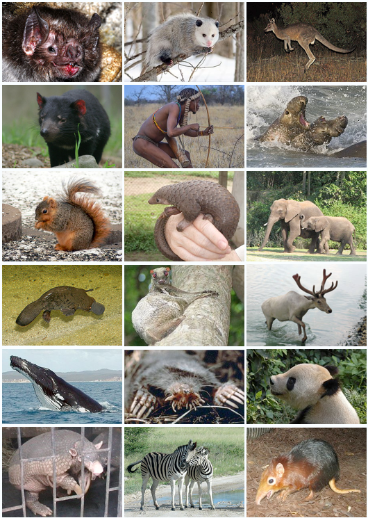
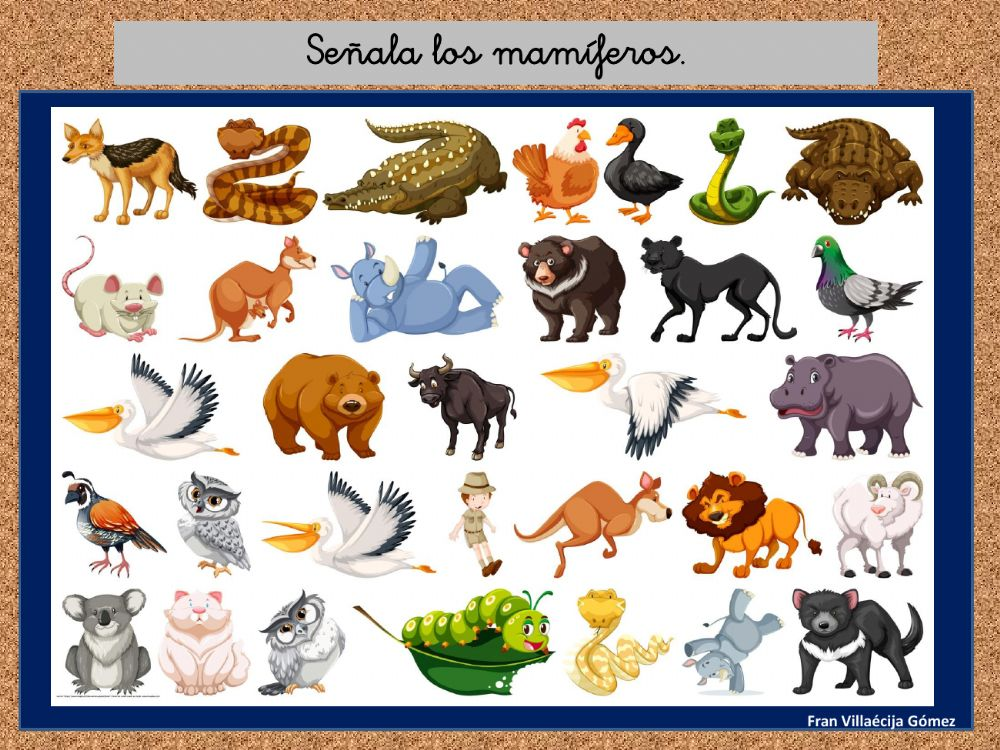

 Los mamíferos constituyen un grupo de seres vivos muy diverso y, a pesar del reducido número de especies que lo forman en comparación con otros taxones del reino animal o vegetal, su estudio es con mucho el más profundo en el campo de la Zoología, seguramente porque la especie humana pertenece a él.
 Es tal la diversidad de la clase que para un profano sería difícil establecer con claridad qué especie es mamífera y cuál no. Para ilustrar con un ejemplo esta diversidad fenotípica, anatomo-fisiológica y etológica basta relacionar algunas de sus especies, como el ser humano (Homo sapiens), un canguro rojo (Macropus rufus), una chinchilla (Chinchilla lanigera), una ballena blanca (Delphinapterus leucas), una jirafa (Giraffa camelopardalis), un lémur de cola anillada (Lemur catta), un jaguar (Panthera onca) o los murciélagos («Chiroptera»).
Los dientes se componen de sustancias que no pertenecen al sistema óseo, sino al tegumentario, como la piel, las uñas y el pelo. La materia que forma el cuerpo del diente es el marfil o dentina, que por lo general está revestido en el exterior de otra sustancia muy dura, el esmalte, mientras que en la base del diente la envoltura externa está compuesta por una tercera sustancia llamada cemento.
En los mamíferos, los dientes se hallan siempre insertos en los huesos del cráneo que rodean la boca, que son, arriba, dos maxilares y dos premaxilares, y abajo, una mandíbula o quijada, que se articula directamente con la caja del cráneo. Este último, a su vez, enlaza con la columna vertebral por medio de dos abultamientos, o cóndilos, que hay a uno y otro lado del agujero por donde la médula espinal penetra para unirse al encéfalo. Aunque el número de vértebras de la columna vertebral varía mucho según las especies, las cervicales o vértebras del cuello son siete en todos los mamíferos a excepción de los perezosos que pueden tener hasta 10 y de los manatíes que solo poseen seis. Pero, además, existen otras características comunes a estas especies que sirven también para identificarlas como parte del taxón